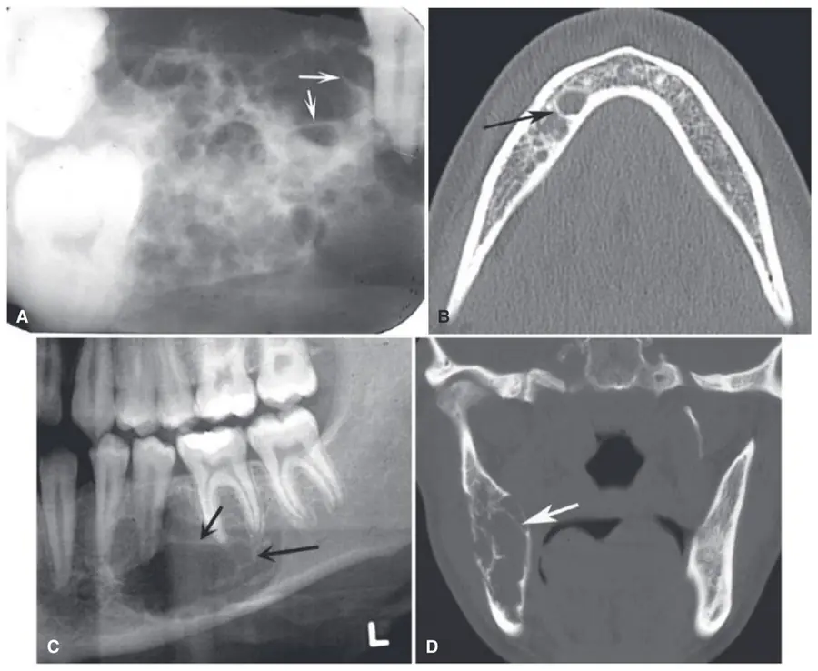
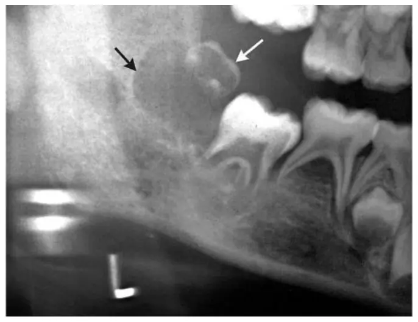

نسخه استخراجشده؛ ترجمه یا تأیید علمی انجام نشده است. وضعیت: captured
ساختار داخلی ضایعه در سه دسته مینشیند: «کاملاً رادیولوسنت، کاملاً رادیواوپک، یا مختلط.»

و دشواری ذاتی دو بعد: «بخش چالشبرانگیز این تحلیل، تصمیم دربارهی این است که آیا مادهی کلسیفیهی ادراکشده درون خودِ ضایعه است یا باکال یا لینگوال آن.»
ترتیب دانسیته — از رادیولوسنتترین به رادیواوپکترین: هوا، چربی و گاز، مایع، بافت نرم، مغز استخوان، استخوان ترابکولار، استخوان کورتیکال و عاج، مینا، فلز. و یک هشدار: «مقدار بافت یا ماده در ناحیه بر درجهی رادیولوسنسی یا رادیواوپسیته اثر میگذارد؛ برای نمونه، مقدار زیادی استخوان کورتیکال میتواند به اندازهی مینا رادیواوپک باشد.»
چهار نوع محتوای داخلی که باید بشناسی:
و مهمترین بخش این درس: سپتوم چه میگوید؟ منشأ استخوان داخلی میتواند استخوان نرمالِ محبوسشده باشد (مثل آملوبلاستوما)، یا سلولهای خود تومور آن را بسازند (مثل ضایعهی سلول ژانت مرکزی). «طول، ضخامت و جهتگیری سپتوم باید ارزیابی شود» چون «ظاهر سپتوم میتواند دندانپزشک را از ماهیت و پاتوژنز ضایعه آگاه کند».
سه امضای سپتومی:
و ساختار دندانی در درون ضایعه «با حضور مینا، عاج و اتاقک پالپ» شناخته میشود و «دانسیتهاش معادل دانسیتهی نرمال ساختار دندان و بیشتر از استخوان اطراف» است. شایعترین ضایعات با این تغییرات: اودنتومای کامپوند و کامپلکس.
ارزیابی اثر ضایعه بر ساختارهای مجاور «به دندانپزشک اجازه میدهد رفتار زیستی ضایعه را استنتاج کند» — و همین رفتار به تشخیص کمک میکند.

دندانها. «جابهجایی دندان بیشتر در ضایعات خوشخیم، کندرشد و فضاگیر دیده میشود» — چون چنین ضایعهای «بهآرامی فضای خودش را میسازد با جابهجا کردن دندانها و سایر ساختارها».
و جهت جابهجایی معنادار است:
تحلیل ریشه. «معمولاً با فرایندهای کندرشد رخ میدهد» و میتواند از التهاب مزمن هم بیاید. ولی یک استثنا: «هرچند تحلیل دندان بیشتر به فرایندهای خوشخیم مربوط است، برخی تومورهای بدخیم، بهویژه سارکومها، گاهی میتوانند دندان را تحلیل ببرند.»
پهن شدن فضای PDL — چهار چیز را با هم بسنج: «مهم است مشاهده شود پهن شدن موضعی یا منتشر، نامنظم یا یکنواخت است، و اپیسنتر پهن شدن کجاست. لامینا دورای مجاور هم باید همزمان ارزیابی شود.»
و دو الگوی متضاد:
و اپیسنترِ پهن شدن، منشأ التهاب را میگوید: «اگر اپیسنتر پهن شدن در آپکس باشد (مثل استئیت رارفاکتیو)، منشأ التهاب به احتمال زیاد از اتاقک پالپ و کانال ریشه است. اگر اپیسنتر کرونال و نزدیک کرست استخوان باشد، منشأ التهاب به احتمال زیاد پریودنتال است.»
واکنش استخوان محیطی. نکتهی مهمی که بسیاری نمیدانند: «حاشیهی کورتیکهی یک کیست در واقع بخشی از کیست نیست؛ بلکه واکنش استخوانی است که در پاسخ به بزرگ شدن کیست پدید میآید.» و شناسایی استخوانسازی محیطی «ویژگی رفتاریای میدهد که نشان میدهد ناهنجاری توانایی تحریک واکنش استئوبلاستیک دارد».
کانال آلوئولار تحتانی — سه الگو: «جابهجایی فوقانی IAC قویاً با دیسپلازی فیبرو همراه است وقتی اپیسنتر ضایعه زیر کانال باشد. پهن شدن با حفظ مرز کورتیکال میتواند ضایعهی خوشخیم عروقی یا عصبی درون کانال را نشان دهد. پهن شدن نامنظم با تخریب کورتکس میتواند نئوپلاسم بدخیم در حال رشد درون کانال را نشان دهد.»
کورتکس و واکنش پریوستئال — سرعت رشد را همینجا میخوانی: «ضایعهی کندرشد ممکن است به پریوست سطحی زمان بدهد تا استخوان نو بسازد، بهطوری که سطح استخوانِ منبسطشده دستنخورده و کورتکس بیرونی حفظ شود. در مقابل، ضایعهی سریعالرشد از توانایی پاسخ پریوست جلو میزند و کورتکس ممکن است از دست برود.»
و شکل انبساط هم خبر میدهد: تومورهایی مثل فیبروم اوسیفاینگ اغلب الگوی رشد هممرکز با اپیسنتر روشن دارند؛ در مقابل، دیسپلازیهای استخوانی مثل دیسپلازی فیبرو «استخوان را در طول خودش بدون اپیسنتر آشکار بزرگ میکنند». و مقدار انبساط هم سرنخ است: کراتوسیست ادنتوژنیک، میکزوما و حفرهی استخوانی ساده «تمایل دارند در طول استخوان با انبساط کمینه رشد کنند»، در حالی که کیست دنتیژروس و آملوبلاستوما «انبساط چشمگیر مرزهای کورتیکال» میسازند.
و سه الگوی واکنش پریوستئال: «ترشحات یک ضایعهی التهابی میتوانند پریوست را به ساختن استخوان نو تحریک کنند. وقتی این فرایند بیش از یک بار رخ دهد، لایهلایه شدنی به نام «پوست پیازی» دیده میشود» — شایعتر در ضایعات التهابی و بهندرت در تومورهایی مثل لوسمی و هیستیوسیتوز سلول لانگرهانس. الگوی دوم: اسپیکولهای استخوانی عمود بر کورتکس سطحی، که در ضایعات متاستاتیک پروستات دیده میشود. و الگوی سوم: «الگوی پرتوافشانتر استخوان که به آن «سانبرست» (تابش خورشیدی) میگویند»، در استئوسارکوم یا همانژیوم.